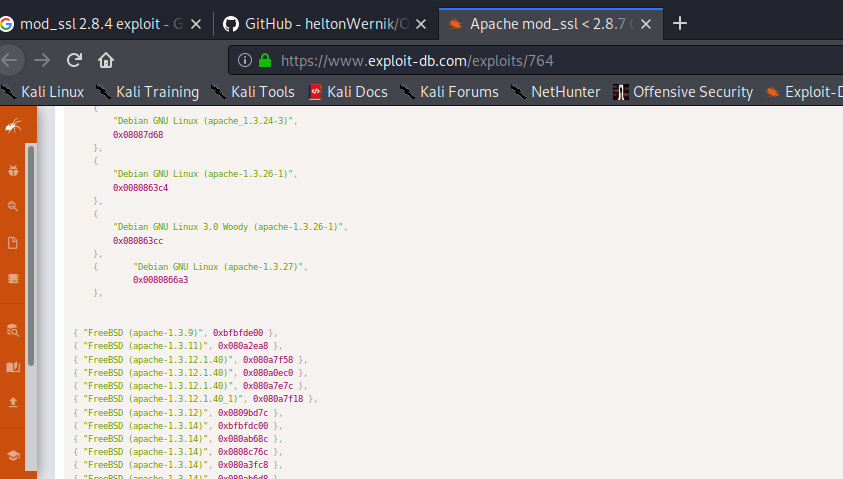

see the notes
go in order of lowest hanging fruit
order by author:
80,443
139,445
are the juiciest
open ssh isnt so much and webalizer isnt also so much
now google abt them
got this

this is a code for buffer overflow
we directly got the code
this site is good so trustworthy hai
we even took the github link as this is kinda outdated now next step for apache

see the score if its in red color then thats juicy not anything else
red is crtitcal

thus u got same site as above for this also lets move forward
OpenSSL is tied directly to modSSL so u dont reallly have to try it
now move to SMB

rapid7 is a good site as it makes use of metasploit
on that site

we did get access tp ipc na bt we didnt get access to admin though
bt we still logged in
we are running aginst an x86 linux system too na
and we did anonymous login too
lets say u re working where no internet access so try using the terminal now
use searchsplot bt dont be too specific or else wont get results
(though in update kali linux we did get results even after being secific)


see carefully

u get trans2open many many times na
now lets do same for modssl 2
(when i was speciific)


thus read it properly dos means denial service we are interseted in remote mainly